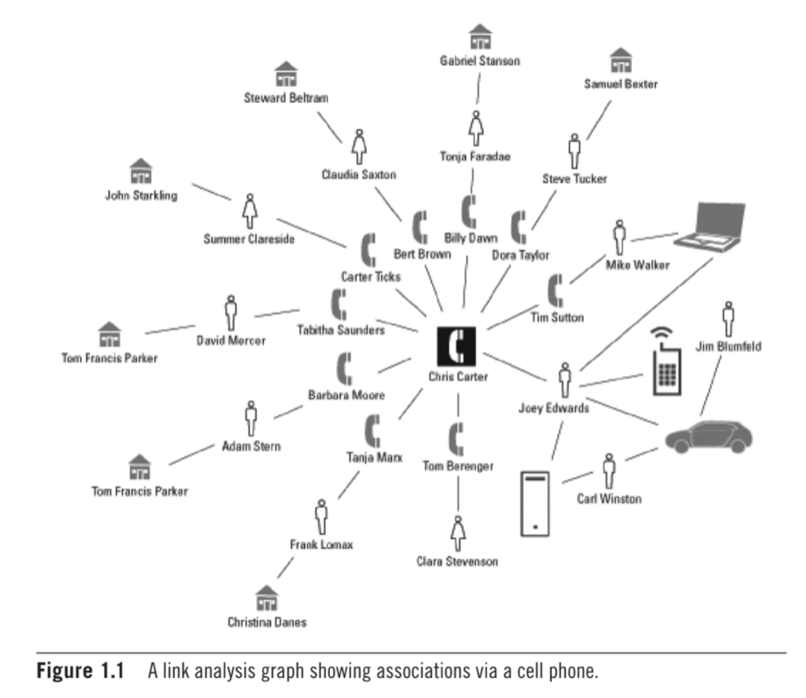

What is OneFarm Grow?
OneFarm Grow digitises commercial outgrower programmes to improve visibility throughout the supply chain, ensure procurement channel efficiency, and enable a focus on the core production business. Ultimately unlocking the provision of innovative financial services to both smallholder farmer and agribusiness
Uganda
Clients: UNADA and CHM
UNADA needed designs to address the following challenges faced by agro-dealers:
1. Onboarding agro-dealers
2. Onboarding input suppliers
3. Ordering and receiving quality inputs, then distributing them to farmers
4. Onboarding agro-dealers onto Flexi-pay, a mobile wallet platform
learn more

Literature Review
Implementing Machine Learning tools and/or techniques in: suspect profiling
Introduction Suspect profiling is understood as the practice of identifying alleged preparators associated with criminal activity. Criminal profilers rely on numerous techniques to pinpoint offenders. Law enforcement recognises machine learning tools and extensive data analysis as a “reliable standard of evidence-based profiling” (UCF online, 2022). Machine learning tools aid law enforcement by detecting patterns and behaviours through data collection (Wired, 2018). Ultimately this leads to faster and more efficient suspect profiling.
learn more
History of criminal profiling
Suspect profiling can be dated by to the 19th century, where law enforcement used psychological methods to apprehend serial killers. During that time, investigators had access to limited resources and therefore information uncovered about a suspect was often unreliable (UCF Online, 2022). Overtime, suspect profiling has advanced significantly. For instance, an FBI agent, John Edward Douglas developed a profiling method that is still used today. “Douglas was able to research the psychopathologies and behavioural abnormalities of serious criminals, beginning the process of identifying patterns and correlating behaviours” (UCF online, 2022).
Modern technology and databases are largely responsible for the improvements in forensic science. These advancements can be attributed to technologies, such Violent Criminal Apprehension Program (ViCAP). ViCAP gathers data and identifies correlations related to violent, unlawful behaviour (UCF online, 2022). Recognising patterns of behaviour is important as it helps formulate theories, establish probable cause and predict future offenses.
Machine learning forensics explained
Machine learning forensics has derived from artificial intelligence, where computers systems are able to complete tasks that require human-like intelligence. This is implemented through “pattern recognition software that analyses vast amounts of data to predict some behaviour, which in the case of forensics is criminal intent and activity” (Mena, 2011). In order to leverage behavioural analytics, machine learning relies on historical data and current risk activity. For instance, “the outputs of most machine learning programs are conditional IF/THEN rules” (Mena, 2011). As an example,
Both inductive and deductive approaches are used when gathering and analysing data in machine learning for suspect profiling. Inductive reasoning identifies patterns and then makes generalisations using methods, such as link analysis. Link analysis involves the use of communication channels to uncover connections between different people and consequently reveal “who knew whom, where and when” (Mena, 2011). For instance, social media data sets assist in the creation of a suspect profiles by using algorithms to discover an individual’s interests and personality. Results of link analysis are displayed in the form of a graph where there are links (edges) and circles (nodes) which represent the individual being investigated. The thickness of the line linking the different individuals, indicates the strength of their association (Mena, 2011).

On the other hand, deductive reasoning involves predicting criminal behaviour based on a set of data, such as a suspect’s digital trail to deduce facts we know to be true.
A model is established to investigate behavioural data in order to anticipate a suspect taking part in unlawful acts. This can be done by “drilling down data using such algorithms as classification and regression trees” (Mena, 2011). Regression trees can be embedded into law enforcement systems and provide a graphical demonstration of IF/THEN rules. Certain rules are put in place to classify data into groups and subgroups. For instance, a police officer involved in corrupt activities could suffer from substance abuse, which is a characteristic associated with a specific group of people. Thus, an individual’s motivations and psychology are important when linking them to a particular crime.
Furthermore, there is an additional nature of profiling, where the individual’s characteristics are found but the person is still unknown. In this situation, an investigator needs to search the database to identify an individual who matches the profile (Miller, 2019).
The importance of database access
Law enforcement machine learning resources allow police to make inferences according to specific criteria. It is known that “high volume crimes, such as theft are more amenable to profiling” than more violent, less common crimes, such as murder because of access to larger data sets (Miller, 2019). Additionally, it is easier to identify suspects that are repeat offenders as specific data is already held regarding previous crimes. Thus, database access and integration across numerous jurisdictions greatly supports profiling.
Advantages of machine learning in suspect profiling
There is a enormous amount of criminal records, which when sifted through manually to identify repeat offenders, takes up a mass amount of time and are hard for the human mind to discern. Machine learning tools provide an effective, accurate, less time consuming process to analyse data to generate predictions (Munasinghe and Perara, 2015). Additionally, machine learning tools have no personal nature or feelings towards an investigation and are therefore not subject to personal bias.
Ultimately, machine learning tools can be used advantageously for crimes that are under investigation, by using algorithms and applying them to datasets to create a profile based on gender, race, age, education and so forth. For instance, text mining can be viewed as a preventative machine learning tool to protect a system or the general public from being compromised.
Text mining involves the extraction of desired keywords from large amounts of content. After extraction, machine learning tools are aware of how the keywords relate to one another and can analyse results and identify emerging trends (Goyal, Gupta etc., 2020). As an example, the famous Unabomber case made use of forensic linguistics to catch the perpetrator. The Unabomber would plant explosive devices at his desired location and send letters to the FBI. The perpetrator was known for not leaving any form of physical trace at the bomb site. Nevertheless, he was eventually caught through the analysis of his writing style. “The FBI used a simple computational method looking at word frequencies, spelling variants and the like to build up a linguistic profile” (Luu, 2017). Thus, they were able to match the authors of the letters to the perpetrators letter’s to his family, along with other written documents.
Disadvantages of machine learning in suspect profiling
Machine learning in forensic science raise ethical and legal concerns, because they are subject to error. For instance:
Missing data can result in unreliable predictions.
Machine learning algorithms only draw conclusions based on the data it has access to. Taking this into account, there could be bias towards a particular demographic, which could lead to discrimination. This data can then be harvested and be weaponised against minority groups. For instance, previous unjust arrests can result in discriminatorily monitoring individuals. This allows law enforcement to gain control over potentially innocent individuals and/or social groups. Thus, it can be said that biased data fosters human prejudice.
There is a lack of transparency involving certain predictive tools and therefore people question its role in the criminal justice system (Heaven, 2020).
Investigators must not only rely on technology, as results can be misinterpreted.
Overall, personal data monitoring should only be used when an individual has been legitimately flagged as a suspect in the eyes of the law. Thus, an individual has the right to question profile deductions if they believe they have been unjustly targeted. Additionally, the development and deployment of associated algorithms should be made transparent so that they can be subject to regular monitoring and be audited by authorities. Finally, it must be recognised that machine learning tools have limitations and must not be used independently of other law enforcement profiling tactics.
Cybercrime and automated profiling
It is important to note that suspect profiling is not limited to physical crimes. Cybercrime is highly prevalent in today’s society. Cybercrime can be understood as any fraudulent act within an online environment (Goyal, Gupta etc., 2020). For example, a denial of service attack or the deployment of a virus. Machine learning identifies a cluster of traits uniquely associated with an individual and crime incidences. For instance, a payment system’s data could be broken down until the algorithm is able to determine the primary characteristics and behaviours of a group involved in fraudulent transactions, which may include sex, employer, address, transactional history, and other social factors. Altogether, cybercrime highlights vulnerabilities within a system that make them susceptible to an attack.
For instance, classification and clustering algorithms can be used to identify geographical hotspots that can be plotted out onto a map. Attributes associated with a particular group of individuals, could reveal that crimes such as money laundering are occurring primarily in a particular region (Custers, 2021). Consequently, law enforcement agents can focus on hotspots making crime detection more efficient.
Conclusion
In conclusion, automated computer-assisted technology can benefit and assist data management in law enforcement agencies. Thus, data is recognised as “evidence for machine learning forensics” (Mena, 2011). Evidently, AI tools effectively provide efficient profiles of suspects associated with complex crimes. Nevertheless, machine learning algorithms raise concerns about potential biases, privacy invasion and inaccurate profile creation because they are heavily automated. To address these issues, robust ethical and legal frameworks need to be executed to guide machine learning practices. Overall, it is essential that both machine learning and human judgement are used in conjunction when profiling a potential suspect.
References
Custers, B. (2022) Profiling and predictions: Challenges in cybercrime research datafication, SSRN. Leiden University, Leiden, Netherland. Available at: https://deliverypdf.ssrn.com/delivery.php?ID=444091009006086002026089123089092092096081003083049054069100126078089007120024086081107026040056062060105068024107095093031115012043009087045068077026064121092026093023050042112123091127007006084085127124124121010071084014026075026003006120088031084009&EXT=pdf&INDEX=TRUE (Accessed: March 10, 2023).
Heaven, W.D. (2020) Predictive policing algorithms are racist. they need to be dismantled., MIT Technology Review. MIT Technology Review. Available at: https://www.technologyreview.com/2020/07/17/1005396/predictive-policing-algorithms-racist-dismantled-machine-learning-bias-criminal-justice/ (Accessed:February 19, 2023).
J. ICOVE, D. (no date) Automated crime profiling . Available at:https://web.eecs.utk.edu/~icove/CrimeProfiling.pdf (Accessed: February 19, 2023).
M. Mariani , S. (2020) Profiling serial killers using multiple supervised machine learning. Available at: https://studenttheses.uu.nl/bitstream/handle/20.500.12932/37006/eindscriptie_SimonMariani.pdf?sequence=1 (Accessed: February 20, 2023).
Mena, J. (2011) Machine learning forensics for law enforcement, security intelligence, Google books. Google. Available at: https://books.google.co.uk/books?hl=en (Accessed: March 10, 2023).
Miller, S. (2019) Machine Learning, Ethics and Law, ACS Digital Library. AustralasianJournalofInformationSystems. Available at: https://journal.acs.org.au/index.php/ajis/article/view/1893/851 (Accessed: March 10, 2023).
Rudin, C. and Sloan, M.I.T. (2015) Predictive policing: Using machine learning to detect patterns of crime, Wired. Conde Nast. Available at: https://www.wired.com/insights/2013/08/predictive-policing-using-machine-learning-to-detect-patterns-of-crime/ (Accessed: February 20, 2023).
What is criminal profiling and it's role in law enforcement? (2022) UCF Online. Available at: https://www.ucf.edu/online/criminal-justice/news/what-is-criminal-profiling and-what-is-its-role-in-law-enforcement/ (Accessed: February 19, 2023).
Research Proposal Presentation
Transcript: The effectiveness of machine learning techniques in suspect profiling
Introduction
The significance of machine learning in suspect profiling
Criminal investigations rely on machine learning techniques to identify suspects. This is done by analysing data and using pattern recognition software to predict behaviours related to criminal activity (Wired, 2018). It is evident that machine learning techniques can successfully create a profile of an individual (age, gender etc) and pinpoint a culprit that matches the description. Ultimately, it is an efficient tool for solving or preventing complex crimes.
learn more
Access to large data sets: Machine learning tools rely on large data sets to organise data into groups, analyse it and reveal behavioural analytics. In criminology, there are numerous data sources, such as witness statements or descriptions explaining a crime scene. The human mind has limitations, where it is difficult to consume and discern the enormous amount of data associated with criminal records. Taking this into account, artificially intelligent machines can process information much faster and more efficiently. Thus, machine learning provides a reliable and less time consuming method for generating predictions about perpetrators. (Munasinghe and Perara, 2015).
Pattern detection: Machine learning tools execute algorithms that are able to extract information and interpret it in order to identify patterns in behaviour. For instance, text mining is a linguistic machine learning tool used to uncover patterns in keywords. Linguistic forensics allows law enforcement to generate a profile of a potential perpetrator by analysing the words they use to communicate.
Make predictions: Even though many criminal activities appear as unpredictable in nature, they can be foreseen using machine learning tools. Crime forecasting is vital as it can save lives by predicting dangerous criminal behaviour, such as terrorist attacks (Shah, Bhagat, 2021).
Prevent new or repeat offenders: Criminals usually have a motive, which can be identified by monitoring suspicious activity. For instance, machine learning tools allows governing parties access to data sets that can analyse social media engagement by using algorithms to discover who the culprit engages with, their interests and personality (Mena, 2011).
Automated learning: “Machine learning is an application that provides a system with the ability to learn and improve automatically from past experiences without being explicitly programmed.” (Shah, Bhagat, 2021) Basically, the computer algorithm can make inferences based on what it has learnt from the data it has access to.
Absence of human bias: Machine learning tools have no personal nature or feelings towards a particular crime nor the individual committing it. Human beings may be influenced by their own judgements, which can result in discrimination and unreliable predictions. On the other hand, machines are not subject to personal bias, they hold huge significance when profiling a suspect.
Research questions
What are the most efficient and accurate machine learning techniques in suspect profiling?
How accurate are predicted suspect characteristics in relation to actual suspect characteristics?
How much time does it take to complete the machine learning profiling process?
How accessible and user friendly are machine learning tools used for suspect profiling?
What are the ethical and legal implications of using a machine learning approach?
Are machine learning tools more productive than traditional suspect profiling methods?
Aims and objectives
It is important we identify the most successful algorithms used for suspect profiling as we want to test and make use of the best performing machine learning tools, as they will provide the most reliable results.
We want to be able to prove the significance of machine learning when profiling suspects, and how they can provide more accurate results as machines that are not subject to human error.
We need to ensure that machine learning tools are used ethically and do not contribute towards discrimination. This is often a consequence of biased or the interpretation of incorrect data , which produces inaccurate results.
It is essential that machine learning tools adhere to the rule of law. For instance, it should be transparent about how they work and who they are allowed to monitor in the eyes of the law, whilst protecting an individual’s privacy.
Ultimately, we want to identify the most effective machine learning tools that accurately profile a suspect.
Research methodology
Correlational research is used to identify the relationship between different variables without manipulating them. For instance, machine learning tools can be used to identify connections and the strength of association between different people.
Causal-comparative research explores the cause and effect relationship between variables (Williams, 2007). This is an essential research methodology, as it helps us identify if certain variables, such as gender have an effect on criminal activity.
True experimental research provides a systemic approach to quantitative data collection and relies on statistical feedback. This is will either prove or disprove the effectiveness of machine learning for suspect profiling. For instance, the control group can be a group of investigators who conduct research to expose a suspect, versus machine learning tools. The results can then be compared. We will then be able to determine if the machine learning tools produce accurate results in comparison to traditional methods.
Observational research involves “observing a particular aspect of human behaviour with as much objectivity as possible and records the data” (Williams, 2007). Overall, machine learning algorithms analyse human activity and draw conclusions about an individual’s characteristics.
Ethical considerations and risk assessment
People have the right to privacy in the eyes of the law. Therefore, it is important to ensure that machine learning tools do not unjustly monitor anyone activity by unlawfully gaining access to their personal data. Therefore, the surveillance of an individual is only justified if they are suspected of having criminal intent.
Machine learning tools can make mistakes and produce inaccurate results if the data sets they have access to are unreliable. This can ultimately lead to falsely accusing an innocent individual or an entire group of people. This can happen if there are bias’s within the actual data. For instance, a minority group may be targeted because there is more data associated with them. This is a form of discrimination, where machine learning algorithms influence unjust arrests.
Consequently, it is essential that the results produced by machine learning tools are not assumed to be correct without human intervention. Human judgement and machine learning tools must be used in conjunction with an apprehended suspect. Altogether, crime enforcement agencies need to act ethically and be held accountable when profiling a suspect.
Description of artefacts
The following artefacts will be used to validate the effectiveness of using machine learning algorithms when profiling a suspect:
A link analysis diagram is a visual representation of data points and the connections between them. Link analysis diagrams can be used to connect a suspected individual to a crime based on the strength of their association with those around them.
A decision tree is a tree like structure, which displays the decisions someone makes and their outcome. This can be used to classify individuals into certain categories based on the choices they make. Additionally, decision trees can also be used to solve regression problems by providing “predictive analytics to forecast outputs from unseen data” (Klaise, 2021). The regression approach is a supervised machine learning algorithm, where the model is trained to understand the relationship between independent variables and output data.
Support vector machines (SVM) are used to predict the probability of repeat offenders. The aim of this approach is to obtain insight about offender behaviour based on historical datasets. This is done by classifying data and separating it into positive and negative instances using hyperplanes. Hyperplanes operate within a decision boundary to help organise data. In terms of law enforcement, support vector machines could be used to decipher who, when and why criminals will return to jail (Wang etc., 2010).
A Bayesian network model is used to analyse data and make probable inferences about criminal behaviour. This can be explained by examining the probability of different outcomes associated with nodes (data points). For instance, “the evidence obtained from the crime scene of a new case is inserted in the trained BN model and, through the inference engine, the offender psycho-behavioural profile is produced” (Baumgartner, Ferrari, Palermo, 2008). Overall, the combination of different models can provide the most accurate predictions.
Agile approach
An agile methodology will be used to manage this project. This is an efficient approach when working with machine learning technology. This is because it focuses on one phase at a time before moving onto the next, which prevents the team from making mistakes. I have broken up the project plan into the following sprints:
Sprint 1 (2 weeks): Answer research questions and collect data
Sprint 2 (2 weeks): Data analysis
Sprint 3 (4 weeks): Model/ artefact development
Sprint 4 (2 weeks): Testing
Sprint 5 (2 weeks): Model alterations
Sprint 6 (2 weeks): Deployment
Conclusion
Identifying suspects and predicting criminal activity are vital in criminology. The use of machine learning tools for suspect profiling needs to be explored extensively to validate its effectiveness. In conclusion, the project aims to assist law enforcement agencies by providing them with the most effective machine learning tools, which produce the most accurate results when profiling a suspect.
References
Baumgartner, K., Ferrari, S. and Palermo, G. (2008) “Constructing Bayesian networks for criminal profiling from limited data,” Knowledge-Based Systems, 21(7), pp. 563–572. Available at: https://doi.org/10.1016/j.knosys.2008.03.019.
Cervone, H.F. (2011), "Understanding agile project management methods using Scrum", OCLC Systems & Services: International digital library perspectives, Vol. 27 No. 1, pp. 18-22. https://doi.org/10.1108/10650751111106528
Heaven, W.D. (2020) Predictive policing algorithms are racist. they need to be dismantled., MIT Technology Review. MIT Technology Review. Available at: https://www.technologyreview.com/2020/07/17/1005396/predictive-policing-algorithms-racist-dismantled-machine-learning-bias-criminal-justice/ (Accessed:February 19, 2023).
Klaise, J. (2023) Decision trees in machine learning explained, Seldon. Available at: https://www.seldon.io/decision-trees-in-machine-learning (Accessed: April 1, 2023).
Mena, J. (2011) Machine learning forensics for law enforcement, security intelligence, Google books. Google. Available at: https://books.google.co.uk/books?hl=en (Accessed: March 10, 2023).
Mena, J. (2011) Machine learning forensics for law enforcement, security intelligence, Google books. Google. Available at: https://books.google.co.uk/books?hl=en (Accessed: March 10, 2023).
Rudin, C. and Sloan, M.I.T. (2015) Predictive policing: Using machine learning to detect patterns of crime, Wired. Conde Nast. Available at: https://www.wired.com/insights/2013/08/predictive-policing-using-machine-learning-to-detect-patterns-of-crime/ (Accessed: February 20, 2023).
Shah, N., Bhagat, N. & Shah, M. Crime forecasting: a machine learning and computer vision approach to crime prediction and prevention. Vis. Comput. Ind. Biomed. Art 4, 9 (2021). https://doi.org/10.1186/s42492-021-00075-z
Shi, Shao-Chong & Chen, Peng & Yuan, Peng-Hui & Hou, Chao & Ming, Hong-Xia. (2018). The Prediction of Offender Identity Using Decision-Making Tree Algorithm. 405-409. 10.1109/ICMLC.2018.8527045.
Wang, Ping & Mathieu, Rick & Ke, Jie & Cai, H.. (2010). Predicting Criminal Recidivism with Support Vector Machine. 2010 International Conference on Management and Service Science, MASS 2010. 10.1109/ICMSS.2010.5575352.
What is link analysis? (2022) Cambridge Intelligence. Available at: https://cambridge-intelligence.com/why-link-analysis/#:~:text=Link%20analysis%2C%20sometimes%20called%20'graph,represent%20the%20connections%20between%20them. (Accessed: April 1, 2023).
Williams, C. (2007) Research methdos, View of research methods. Available at: https://clutejournals.com/index.php/JBER/article/view/2532/2578 (Accessed: April 1, 2023).
Project Summary
The high value payments team is required to create a platform for their staff to process incoming and outgoing payments. The International Standard Organisation is requiring all banks to adopt ISO2022 and a new MX format which is applicable to SWIFT messages. The project focuses on simplifying and unifying the financial sector and global business communication. This is done by introducing universally applicable terminology, which will enhances international payments and reduces risk. I am unfortunately unable to showcase any of my work by virtue of confidentiality provisions in my contract.